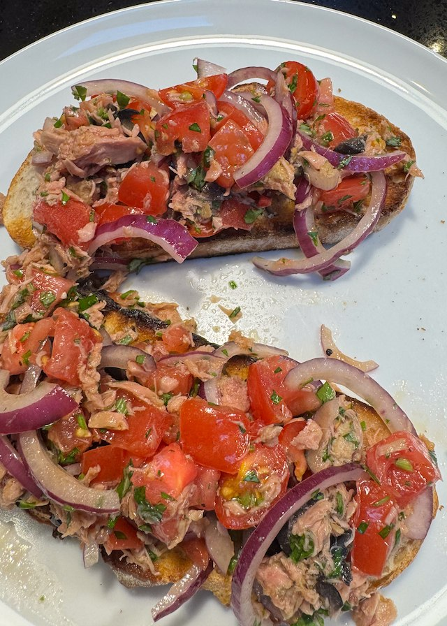
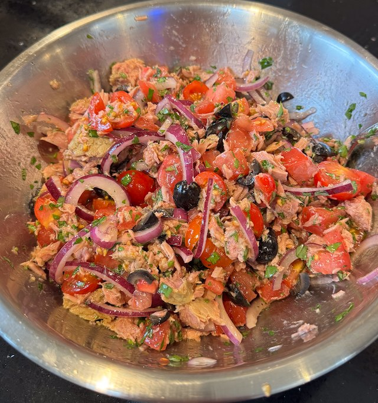

Tomato and Tuna Bruschetta

Serves: 4
Cook Time: 15 min
From Hello! magazine.
Ingredients
- 4 slices crusty bread
- Topping
- 2 beef tomatoes, chopped 1cm dice, salted
- 1 red onion, sliced
- 8 black olives, sliced
- 2 anchovy fillets, mashed
- 200g tin tuna, drained and flaked (probably 2 tins)
- parsley, chopped
- basil leaves, chopped
- Dressing
- 4 tbsp olive oil
- 1 lemon, juiced
- salt and pepper
Method
Bread. Toast or fry in a pan.
Topping. Prepare the topping ingredients and mix together in a bowl.
Dressing. Whisk together the dressing ingredients and pour over the topping and mix.
Serve. Pile the topping on the toast.
